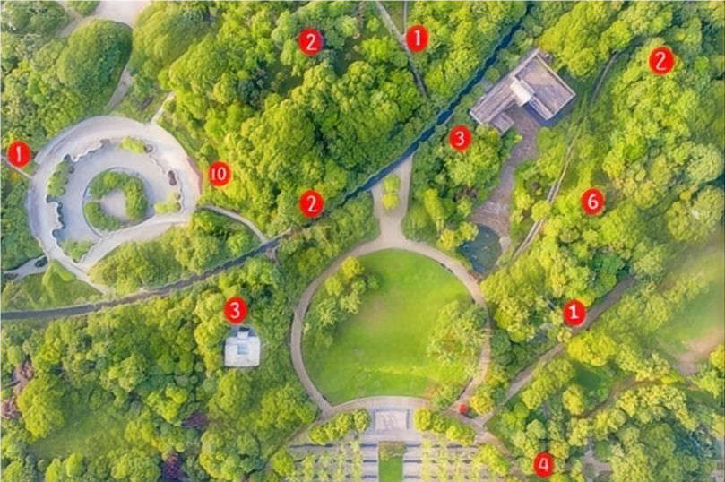

数据总览
土壤pH值
6.8
正常
适宜植物生长
土壤电导率
426 μS/cm
3.2%
较上月
土壤湿度
38 %
2.1%
较上月
植物高度
128 cm
5.3%
较上月
实时异常警报
查看全部| 警报类型 | 位置 | 严重程度 | 发生时间 | 状态 |
|---|---|---|---|---|
|
|
徐汇区 | 严重 | 今天 09:24 | 处理中 |
|
|
浦东新区 | 中等 | 今天 08:15 | 待处理 |
植物健康趋势
预测养护区域可视化

绿化规划模拟
数据报表
历史报告列表
月度绿化健康报告
已生成2024年10月上海绿化区域健康状况分析
2024-10-31
2.4 MB
病虫害防治报告
已生成2024年Q3上海园区病虫害防治总结
2024-09-30
1.8 MB
生成新报告
市民反馈
张先生
2小时前 · 徐汇区
漕河泾公园的灌木丛有虫害迹象，部分叶片已经枯黄，建议尽快安排检查。
李女士
昨天 · 浦东新区
世纪公园的草坪灌溉不足，最近天气干燥，部分区域草皮发黄。